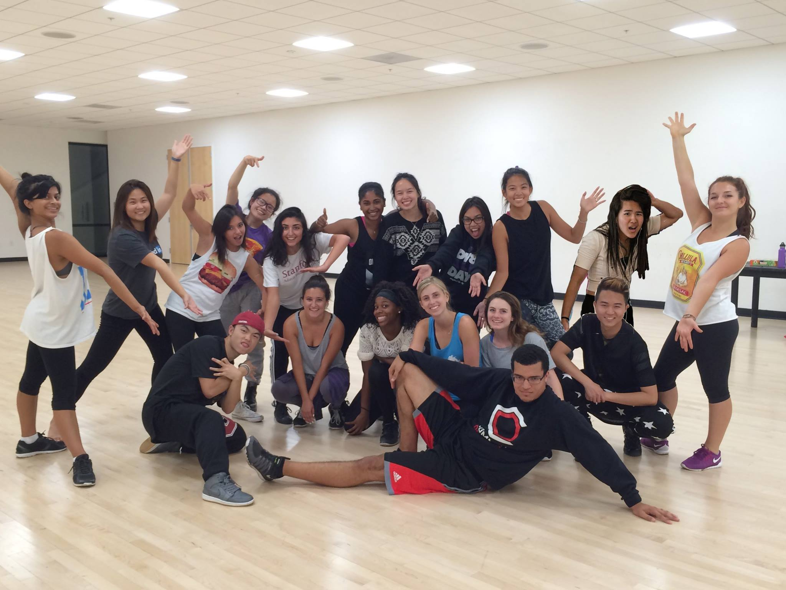
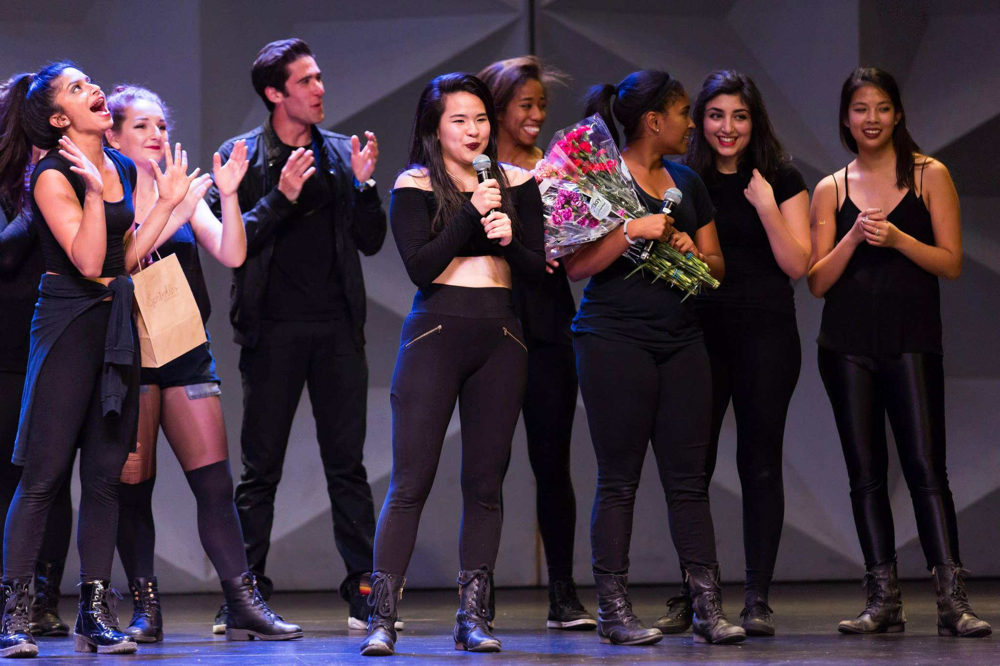

Dv8 was founded in 2001 by Michelle Florendo, Filamer Kabigting, and Anh Tan on the basis that they would deviate from the norm, push boundaries, and explore various dimensions of dance.
Dv8 Today
Dv8 is more than just a group of really, really, ridiculously good-looking hip hoppers tryna function. Dv8 is a reminder to its dancers to deviate from the norm, push boundaries, and continue exploring various dimensions of dance. The hip hop group has never been concerned with what a hip hop dance group is "supposed" to be, often blending multiple dance styles. Anonymous sources say it is, in fact, “swaggy."

it's showtime.

EnCounter Culture (ECC)
Dv8's annual winter hip-hop showcase features professional and collegiate-level talent from across Northern California. We've invited dance teams from Berkeley (Mainstacks, Team Velociraptors) as well as groups based in the San Francisco Bay (Project M). It's a dance explosion known to sell out - fast!
What else do we do?
We perform in other Stanford dance shows such as Common Origins's annual fall showcase Breaking Ground, Stanford's Dance Marathon charity event, Party on the Edge, Alliance's annual spring showcase Hypnotized and Urban Styles's annual spring showcase.